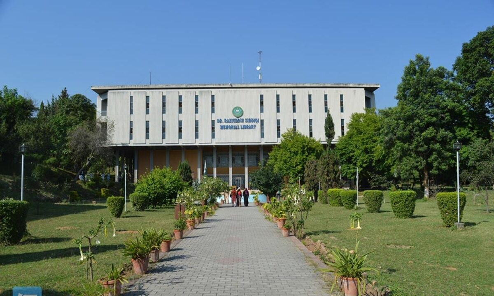
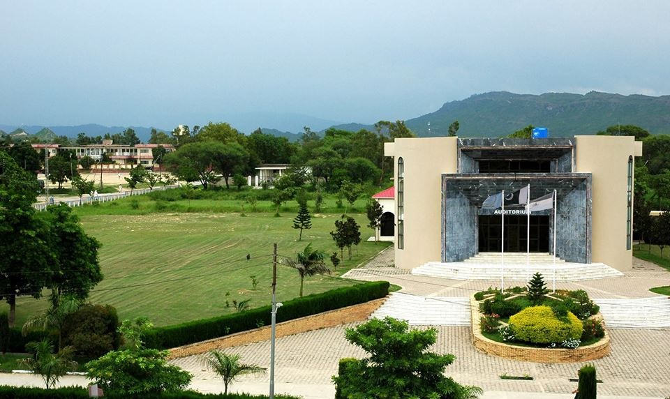
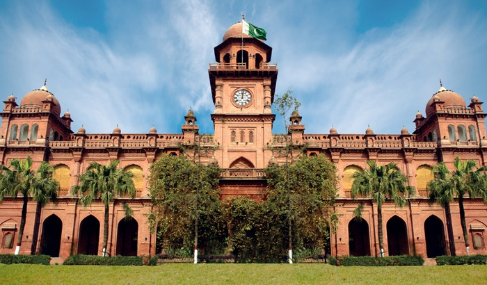
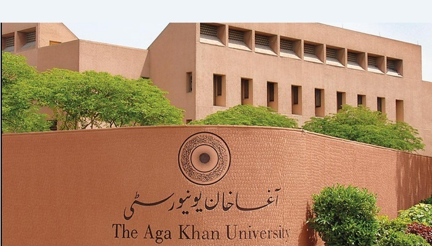
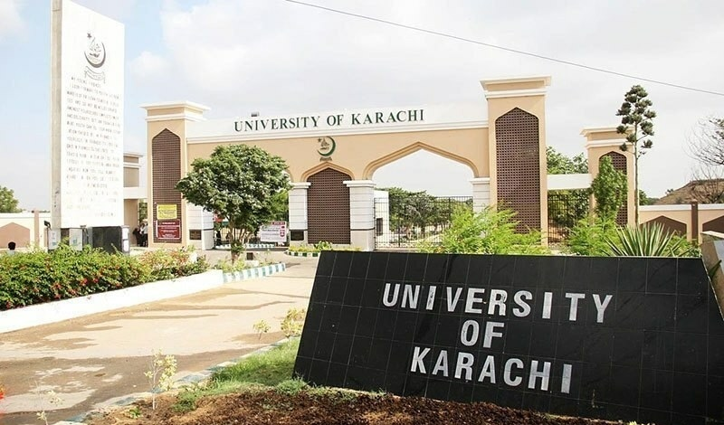
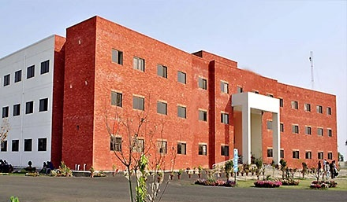
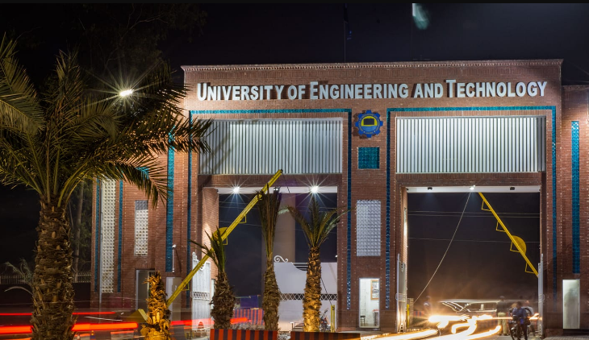
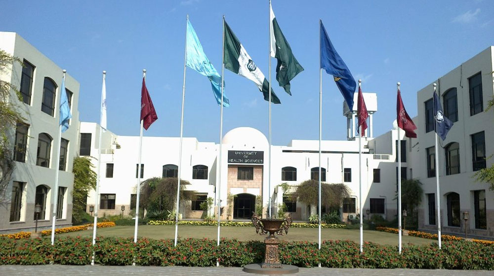

Top Universities Of Pakistan
Pakistan's universities offer quality education, research opportunities, and diverse programs in fields such as engineering, medicine, social sciences, business administration, and information technology/computer science. They play a vital role in shaping the country's intellectual landscape and contributing to its socio-economic development.
1. Quaid-i-Azam University (Islamabad)

Quaid-i-Azam University, located in Islamabad, is one of the most prestigious universities in Pakistan. Established in 1967, it is named after the founder of Pakistan, Quaid-i-Azam Muhammad Ali Jinnah. The university offers a wide range of undergraduate, postgraduate, and doctoral programs in various disciplines, including natural sciences, social sciences, engineering, and management sciences.
Visit Now
2.Lahore University of Management Sciences

Lahore University of Management Sciences (LUMS), situated in Lahore, is one of the leading higher education institutions in Pakistan. Established in 1985, LUMS has gained a stellar reputation for its academic excellence and world-class faculty. The university offers a diverse range of undergraduate, graduate, and doctoral programs in fields such as business administration, computer science, engineering, humanities, social sciences, and law.
Visit Now3. Pakistan Institute of Engineering and Applied Sciences (PIEAS) (Islamabad)

Pakistan Institute of Engineering and Applied Sciences (PIEAS), located in Islamabad, is a prestigious higher education institution specializing in science, engineering, and technology. PIEAS offers undergraduate, postgraduate, and doctoral programs in disciplines such as nuclear engineering, electrical engineering, mechanical engineering, computer science, and materials science.
Visit Now
4. University of the Punjab (Lahore)

The University of the Punjab, situated in Lahore, Pakistan, is a venerable institution that holds a prominent place in the country's education sector. Founded in 1882, it boasts a long and illustrious history, contributing significantly to the development of education in Pakistan. The university provides a diverse array of undergraduate, graduate, and doctoral programs across multiple fields such as humanities, social sciences, natural sciences, engineering, and medicine.
Visit Now
5. National University of Sciences and Technology (NUST) (Islamabad)
The National University of Sciences and Technology (NUST) in Islamabad, Pakistan, is a prestigious institution established in 1991. Renowned for its focus on science, technology, engineering, and management sciences, NUST offers a diverse range of academic programs. It is recognized as a center of excellence and is known for producing skilled professionals and researchers. With strong industry and government collaborations, NUST promotes innovation, entrepreneurship, and practical application of knowledge.
Visit Now6. Aga Khan University (Karachi)

Aga Khan University (AKU), situated in Karachi, Pakistan, is a prestigious and globally acclaimed university renowned for its excellence in higher education and healthcare. Founded in 1983, AKU has garnered a reputation for its dedication to academic brilliance, research endeavors, and community engagement. The university provides a comprehensive range of programs across various fields, including medicine, nursing, education, media and communications, and public health.
Visit Now
7. University of Karachi (Karachi)

The University of Karachi, located in Karachi, is one of the largest and oldest universities in Pakistan. Established in 1951, it has a long-standing reputation for academic excellence and research contributions. The university offers a diverse range of undergraduate, postgraduate, and doctoral programs in various fields, including arts, sciences, social sciences, business administration, law, and Islamic studies.
Visit Now
8. COMSATS University Islamabad

COMSATS Institute of Information Technology (CIIT), located in Islamabad, is a prestigious institution renowned for its focus on information technology and computer science education. Established in 1998, CIIT offers a diverse range of undergraduate, postgraduate, and doctoral programs in various disciplines, including computer science, electrical engineering, business administration, and social sciences.
Visit Now
9.University of Engineering and Technology (UET) (Lahore)

The University of Engineering and Technology (UET) Lahore is a prestigious institution located in Lahore, Pakistan. It is one of the oldest and most renowned engineering universities in the country. UET Lahore was established in 1921 as the 'Mughalpura Technical College' and later evolved into a full-fledged university. UET Lahore offers undergraduate, postgraduate, and doctoral programs in various fields of engineering, technology, and sciences.
Visit Now10.University of Health Sciences (UHS) (Lahore)

The University of Health Sciences (UHS) in Lahore is a renowned institution dedicated to medical and health sciences education. Established in 2002, UHS plays a pivotal role in standardizing and regulating medical education and training in the province of Punjab, Pakistan. The university offers undergraduate and postgraduate programs in various disciplines, including medicine, dentistry, nursing, pharmacy, and allied health sciences.
Visit Now